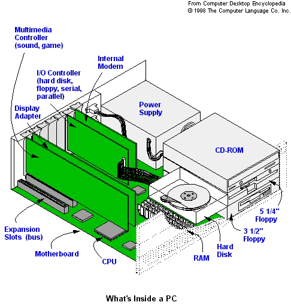

Overview

PC
(Personal Computer) Although the term PC is sometimes used to refer to any kind of
personal computer (Mac, Amiga, etc.), in general, PC refers to computers that conform
to the PC standard originally developed by IBM. PCs are used as stand-alone personal computers
or as workstations and file servers in a LAN (local area network). They run under Windows.
If an Intel-based PC is used as a server running UNIX or other operating system, it is typically
called an Intel-based server, or x86-based server, not a PC.
You can replace floppies, hard disks and video displays, as well as add a scanner,
CD-ROM or other device because PC components are interchangeable. Expansion cards are plugged
in and out, and an entire motherboard can be replaced with one from a different vendor.
Power Supply
An electrical system that converts AC current from the wall outlet into the DC currents
required by the computer circuitry. In a personal computer, +5, -5, +12 and -12 voltages are generated. The 5 volts
are used for the electronic circuitry, and the 12 volts are required for the drives.Fortunately, power supplies usually
come preinstalled with the PC case and are standardized between Desktop and Laptop PCs, so you will probably never have
to choose between power supplies. Below are a few things to look for in the Powersupply:
EMI Electro Magnetic Interference
Fan Rating - Airflow rated in cubic feet per minute
Hold-up time - Time period that a power supply's output will remain within specified limits, following power
disturbances or a loss of input power.
Load regulation - Change in output voltage due to a varying load.
Line regulation - Change in output voltage due to varying input voltage.
MTBF - Mean Time Between Failure.
Noise - Loudness
Operating temperature - Range of temperatures a power supply can be safely operated.
Overvoltage protection - Shuts down the power supply if the output voltage exceeds a specified limit.
Page 2